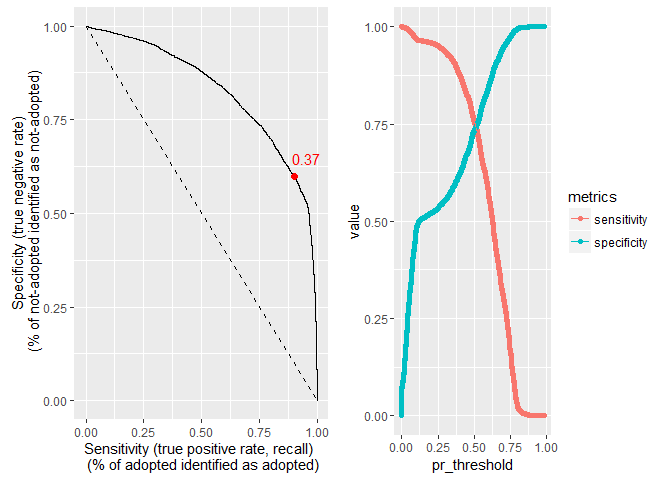
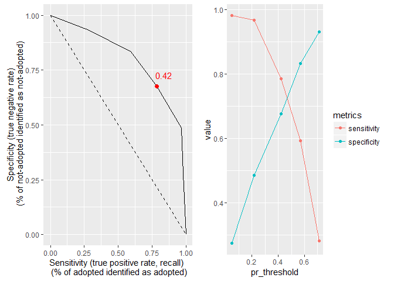

3 Traning and evaluating a model
- Write a function “train_Kappa”. We can use this function with different parameters, keeping Rmd clean
- Source it and use it. Use default values in function
- Learn to do debuging in R
3.1 pre-process the data
use_formula = TRUE
DF_for_prep <- DF_binary # use binary outcomeknitr::spin_child("scripts/Pre_process_data.R") #knitr::opts_chunk$set(echo = TRUE, eval = FALSE)- to run use rmarkdown::render(“scripts/Pre_process_data.R”)
- Or just press “compile notebook” button in Rstudio
library(caret)
y_ind = 1
x_ind = 2:ncol(DF_for_prep)- Read this http://topepo.github.io/caret/preprocess.html.
- Only some of these methods were used here
3.1.1 Creating dummy variables
Prepare a formula for interaction terms if needed
incl_var <- "(AnimalType + PopName + BreedSH + BreedL + BreedD + BreedMix + Breed2)"
library(stringr)
form <- str_c("~ " , str_c(names(DF_for_prep)[-1], collapse = " + "),
"+ AgeOnOutcome:", incl_var,
"+ AgeOnOutcome2:", incl_var,
"+ AgeOnOutcome3:", incl_var,
"+ AgeOnOutcome12:", incl_var,
"+ AgeOnOutcome13:", incl_var)
form.f <- as.formula(form)3.1.2 Deal with NA
we can do knn imputing, but in this case just remove NAs
DF_for_prep <- na.omit(DF_for_prep)3.1.3 Split data to x and y
names(DF_for_prep)[y_ind] <- "outcome"
y_data <- DF_for_prep[, y_ind]
x_data <- DF_for_prep[, x_ind]3.1.4 Create dummmy variables
before splitting the data. Otherwise train function will create dummies on the fly. But, in this case, training set will not have the same number of levels for each factor. This will create different number of predictros. The same is true for cross-validation.
if(use_formula == TRUE){
dv <- dummyVars( form.f , data = x_data, fullRank = T)
# without fullRank we will have linearly dependent colomns: color will have TRUE and FALSE
}else{
dv <- dummyVars( ~ . , data = x_data, fullRank = T)
}
x_data <- data.frame(predict(dv, x_data))3.1.6 Check for linear dependencies
comboInfo <- findLinearCombos(x_data)
if(length(comboInfo$remove) > 0)
x_data <- x_data[, -comboInfo$remove]3.1.7 Split data to train and test set
trainIndex <- createDataPartition(y_data$outcome, p = .8, list = F)
x_data_train <- x_data[ trainIndex,]
x_data_test <- x_data[-trainIndex,]
y_data_train <- y_data[ trainIndex,]
y_data_test <- y_data[ -trainIndex,]3.1.8 If needed Center and scale, or range (0 to 1)
dummyVars comand created dummies as num. If we want to scale data, we either should recode them as factors or use range comand instead (will map data to interval (0, 1))
#preProcValues <- preProcess(x_data_train, method = c("range"))
#x_data_test <- predict(preProcValues, x_data_test)
#x_data_train <- predict(preProcValues, x_data_train)How large is the df now
cat("New DF dimensions \n", dim(x_data_train), "\n")## New DF dimensions
## 21369 42cat("n/p ratio is \n", dim(x_data_train)[1]/dim(x_data_train)[2], "\n")## n/p ratio is
## 508.7857Data are ready
df_train <- data.frame(x_data_train, y_data_train)
df_test <- data.frame(x_data_test, y_data_test)3.2 Training a Linear model (glm - logisting regression)
knitr::spin_child("scripts/train_Kappa_4.R") 3.2.1 Script for linear model training
train_Kappa <- function(DF, error_est = "none", model = "lm", par = FALSE){
library(caret)
set.seed(3456)
# Parallel processing
if(par){
require(foreach); require(doParallel)
cl <- makeCluster(3) #use 3 cores
registerDoParallel(cl)
}
# Set up training
fitControl <- trainControl(method = error_est,
number = 10,
# classProbs = TRUE, # TRUE for ROC
# summaryFunction = twoClassSummary, ## twoClassSummary this for ROC metric
verbose = TRUE)
# Train the model
lmFit <- train(outcome ~ ., data = DF,
method = model,
metric= "Kappa",
# preProc = c("scale"),
trControl = fitControl)
if(par){
stopCluster(cl)
}
return(list(model = lmFit))
}#debugsource("scripts/train_Kappa_4.R")Now the actual training:
res_GLM <- train_Kappa(df_train, error_est = "none", model = "glm")
names(res_GLM)
save(res_GLM, file = "Rdata/res_GLM.RData")load("Rdata/res_GLM.RData")3.3 Evaluating Linear Model
3.3.1 Predict for one observation of training data
# LEt us take first record in test as an example
#View(df_train[1, ])
predict(res_GLM$model, df_train[1, ])## [1] yes
## Levels: no yespredict(res_GLM$model, df_train[1, ] , type = "prob") #Predicted Probability## no yes
## 1 0.4619147 0.5380853df_train[1, "outcome"] #actual## [1] "no"3.3.2 Predict for all the train observations
trainPred <- predict(res_GLM$model, df_train)
confusionMatrix(trainPred, df_train$outcome, positive = "yes")## Confusion Matrix and Statistics
##
## Reference
## Prediction no yes
## no 9321 2052
## yes 3432 6564
##
## Accuracy : 0.7434
## 95% CI : (0.7375, 0.7492)
## No Information Rate : 0.5968
## P-Value [Acc > NIR] : < 2.2e-16
##
## Kappa : 0.4802
## Mcnemar's Test P-Value : < 2.2e-16
##
## Sensitivity : 0.7618
## Specificity : 0.7309
## Pos Pred Value : 0.6567
## Neg Pred Value : 0.8196
## Prevalence : 0.4032
## Detection Rate : 0.3072
## Detection Prevalence : 0.4678
## Balanced Accuracy : 0.7464
##
## 'Positive' Class : yes
## # Predicted probabilities
trainPred <- predict(res_GLM$model, df_train, type = "prob")3.3.3 ROC Curve
ROC curve is Sensitivity vs Specificity for different cut-off points. (If x axis goes from 0to1 vs 1to0, then Sensit vs 1-Spec)
Each point on the ROC curve represents a sensitivity/specificity pair corresponding to a particular decision threshold. The closer the ROC curve is to the upper left corner, the higher the overall accuracy of the test.
3.3.4 plot, get probabilities
Function for drawing ROC curve and calculating “best cut-off
knitr::spin_child("scripts/make_ROC_curve_4.R")3.3.5 Script for making ROC curve
make_ROC <- function(res, df){
# predict probabilities
trainPred <- predict(res$model, df, type = "prob")
# make ROC object
library(pROC)
rocCurve <- roc(response = df$outcome,
predictor = trainPred[, "yes"])
#### optional - use plot from pRoc package to plot rocCurve
# plot(rocCurve)
# plot(rocCurve, print.thres = "best") # shows "best" cut-off value for p and sens-spec coordinates in parentecies
# best means highest sum sensitivity + specificity - see ?plot.roc
names(rocCurve)
Auc <- rocCurve$auc
print(Auc)
#rocCurve$thresholds
#rocCurve$sensitiviti
# cut-off
# plot and choose threshold based on desired sens or speci
library(dplyr); library(tidyr)
resDF <- data.frame(pr_threshold = rocCurve$thresholds,
sensitivity = rocCurve$sensitiviti,
specificity = rocCurve$specificiti)
# Plot for ROC curve
p_roc <- ggplot(data=resDF, aes(x=sensitivity, y = specificity)) +
#geom_point() +
geom_line() +
#reference line
geom_line(data = data.frame(sensitivity = 0:1, specificity = 1:0), linetype = "dashed") +
xlab("Sensitivity (true positive rate, recall) \n (% of adopted identified as adopted)") +
ylab("Specificity (true negative rate)\n (% of not-adopted identified as not-adopted)")
# Plot for spec and sens vs threshold
resDF <-
resDF %>%
filter(! is.infinite(pr_threshold)) %>%
gather(metrics, value, -pr_threshold)
p <- ggplot(data=resDF, aes(x=pr_threshold, y = value, col = metrics)) +
geom_point() + geom_line()
# use plotly for interactive graph
# Determine a "best" cut-offs
resDF_best <- resDF %>%
group_by(pr_threshold) %>%
mutate(sumSS = sum(value)) %>%
ungroup() %>%
top_n(1, sumSS)
print(resDF_best)
best.cut.off <- resDF_best$pr_threshold[1]
# add "best" dot on p_roc plot
p_roc <- p_roc + geom_point(data = spread(resDF_best, metrics, value), col = 2, size = 2) +
annotate("text", x = resDF_best$value[1] + 0.05, y = resDF_best$value[2]+ .05,
label = round(resDF_best$pr_threshold[1], digits = 2), col = 2)
# plot 2 graphs on the same page
library(ggplot2); library(grid); library(gridExtra)
grid.arrange(p_roc, p, ncol=2, nrow =1)
# possible, but not recomended.
#best.cut.off <<- best.cut.off
#trainPred <<- trainPred
# return object
list(best.cut.off = best.cut.off, trainPred = trainPred, auc = Auc)
}roc_GLM <- make_ROC(res_GLM, df_train)## Area under the curve: 0.8282
## Source: local data frame [2 x 4]
##
## pr_threshold metrics value sumSS
## (dbl) (chr) (dbl) (dbl)
## 1 0.3924277 sensitivity 0.8862581 1.502505
## 2 0.3924277 specificity 0.6162472 1.502505
best.cut.off <<- roc_GLM$best.cut.off
trainPred <<- roc_GLM$trainPredhere Area under the curve (AUC) is 0.8281709
Interpretation: * We want to accept all those who has a chance to be adopted. We want to see high sensitivity algorithm. * We want to reject all those who has a chance to be not-adopted. We want to see high selectivity algorithm.
confusionMatrix(ifelse(trainPred[, "yes"] > best.cut.off, "yes", "no"),
df_train$outcome, positive = "yes")## Confusion Matrix and Statistics
##
## Reference
## Prediction no yes
## no 7859 980
## yes 4894 7636
##
## Accuracy : 0.7251
## 95% CI : (0.7191, 0.7311)
## No Information Rate : 0.5968
## P-Value [Acc > NIR] : < 2.2e-16
##
## Kappa : 0.468
## Mcnemar's Test P-Value : < 2.2e-16
##
## Sensitivity : 0.8863
## Specificity : 0.6162
## Pos Pred Value : 0.6094
## Neg Pred Value : 0.8891
## Prevalence : 0.4032
## Detection Rate : 0.3573
## Detection Prevalence : 0.5864
## Balanced Accuracy : 0.7513
##
## 'Positive' Class : yes
## # compare to default 0.5
confusionMatrix(ifelse(trainPred[, "yes"] > 0.5, "yes", "no"),
df_train$outcome, positive = "yes")## Confusion Matrix and Statistics
##
## Reference
## Prediction no yes
## no 9321 2052
## yes 3432 6564
##
## Accuracy : 0.7434
## 95% CI : (0.7375, 0.7492)
## No Information Rate : 0.5968
## P-Value [Acc > NIR] : < 2.2e-16
##
## Kappa : 0.4802
## Mcnemar's Test P-Value : < 2.2e-16
##
## Sensitivity : 0.7618
## Specificity : 0.7309
## Pos Pred Value : 0.6567
## Neg Pred Value : 0.8196
## Prevalence : 0.4032
## Detection Rate : 0.3072
## Detection Prevalence : 0.4678
## Balanced Accuracy : 0.7464
##
## 'Positive' Class : yes
## # compare to default 0.9 - look at Specificity
confusionMatrix(ifelse(trainPred[, "yes"] > 0.9, "yes", "no"),
df_train$outcome, positive = "yes")## Confusion Matrix and Statistics
##
## Reference
## Prediction no yes
## no 12749 8608
## yes 4 8
##
## Accuracy : 0.597
## 95% CI : (0.5904, 0.6036)
## No Information Rate : 0.5968
## P-Value [Acc > NIR] : 0.4807
##
## Kappa : 7e-04
## Mcnemar's Test P-Value : <2e-16
##
## Sensitivity : 0.0009285
## Specificity : 0.9996863
## Pos Pred Value : 0.6666667
## Neg Pred Value : 0.5969471
## Prevalence : 0.4032009
## Detection Rate : 0.0003744
## Detection Prevalence : 0.0005616
## Balanced Accuracy : 0.5003074
##
## 'Positive' Class : yes
## 3.4 How to train model with different parameters - how to compare
Either use Accuracy, or Kappa, or ROC (AUC), or distance to best model…
3.5 Rpart
- no need to scale data for any tree models
knitr::spin_child("scripts/train_ROC_4.R")3.5.1 Script for trees model training
train_ROC <- function(DF, error_est = "cv", model = "rpart", par = FALSE){
library(caret)
set.seed(3456)
# Parallel processing
if(par){
require(foreach); require(doParallel)
cl <- makeCluster(3) #use 3 cores
registerDoParallel(cl)
}
# Set up training
fitControl <- trainControl(method = error_est,
number = 10,
classProbs = TRUE, # TRUE for ROC
summaryFunction = twoClassSummary, ## twoClassSummary this for ROC metric
verbose = TRUE)
# Train the model
lmFit <- train(outcome ~ ., data = DF,
method = model,
metric= "ROC", # "ROC" for AUC
trControl = fitControl)
if(par){
stopCluster(cl)
}
return(list(model = lmFit))
}Actual training:
res_rp <- train_ROC(df_train, error_est = "cv", model = "rpart", par = T)
res_rp$model
save(res_rp, file = "Rdata/res_rp.RData")load("Rdata/res_rp.RData")confusionMatrix(res_rp$model)## Cross-Validated (10 fold) Confusion Matrix
##
## (entries are percentual average cell counts across resamples)
##
## Reference
## Prediction no yes
## no 50.1 17.4
## yes 9.6 22.9
##
## Accuracy (average) : 0.7299# ROC
roc_rp <- make_ROC(res_rp, df_train)## Area under the curve: 0.8061
## Source: local data frame [2 x 4]
##
## pr_threshold metrics value sumSS
## (dbl) (chr) (dbl) (dbl)
## 1 0.4196767 sensitivity 0.7867920 1.463417
## 2 0.4196767 specificity 0.6766251 1.463417
best.cut.off <<- roc_rp$best.cut.off
trainPred <<- roc_rp$trainPred
confusionMatrix(ifelse(trainPred[, "yes"] > best.cut.off, "yes", "no"),
df_train$outcome, positive = "yes")## Confusion Matrix and Statistics
##
## Reference
## Prediction no yes
## no 8629 1837
## yes 4124 6779
##
## Accuracy : 0.721
## 95% CI : (0.715, 0.7271)
## No Information Rate : 0.5968
## P-Value [Acc > NIR] : < 2.2e-16
##
## Kappa : 0.4443
## Mcnemar's Test P-Value : < 2.2e-16
##
## Sensitivity : 0.7868
## Specificity : 0.6766
## Pos Pred Value : 0.6218
## Neg Pred Value : 0.8245
## Prevalence : 0.4032
## Detection Rate : 0.3172
## Detection Prevalence : 0.5102
## Balanced Accuracy : 0.7317
##
## 'Positive' Class : yes
## roc_rp$auc## Area under the curve: 0.8061here Area under the curve (AUC) is 0.8060541
3.6 RF
- does not overfit while number of trees is large.
- trees ansambles trained independently can be combined
- does auto feature selection. Can be used for cases n < p (n of observ. less than numb of predic.s)
knitr::spin_child("scripts/train_ROC_4.R")3.6.1 Script for trees model training
train_ROC <- function(DF, error_est = "cv", model = "rpart", par = FALSE){
library(caret)
set.seed(3456)
# Parallel processing
if(par){
require(foreach); require(doParallel)
cl <- makeCluster(3) #use 3 cores
registerDoParallel(cl)
}
# Set up training
fitControl <- trainControl(method = error_est,
number = 10,
classProbs = TRUE, # TRUE for ROC
summaryFunction = twoClassSummary, ## twoClassSummary this for ROC metric
verbose = TRUE)
# Train the model
lmFit <- train(outcome ~ ., data = DF,
method = model,
metric= "ROC", # "ROC" for AUC
trControl = fitControl)
if(par){
stopCluster(cl)
}
return(list(model = lmFit))
}Actual training
res_rf <- train_ROC(df_train, error_est = "oob", model = "rf", par = T)
res_rf$model$finalModel
save(res_rf, file = "Rdata/res_rf.RData")load("Rdata/res_rf.RData")## See how number of trees affects Error
plot(res_rf$model$finalModel)
# ROC
roc_rf <- make_ROC(res_rf)
best.cut.off <<- roc_rf$best.cut.off
trainPred <<- roc_rf$trainPred
confusionMatrix(ifelse(trainPred[, "yes"] > best.cut.off, "yes", "no"),
res_rf$train$outcome, positive = "yes")
#here Area under the curve (AUC) is `r roc_rf$auc`3.7 Other models to consider
3.7.1 boosted tree
- can perform better than rf
- slower to learn
- can overfit for large number of trees.
3.7.2 ADA boost
- will do boosted tree model + will change weigth to misclassified classes adaptivelly. Helps for unbalanced classes situation etc.
3.7.2.1 Resapling Unbalanced classes
Other approach to unbalanced classes - resampling * http://topepo.github.io/caret/sampling.html
3.7.3 SVM
one-vs-all (all-pair) approach for many classes
3.7.3.1 Other models implemented in caret
3.7.4 Combining different models.
GAM - general additive models. Caret - combining models. ansamble models